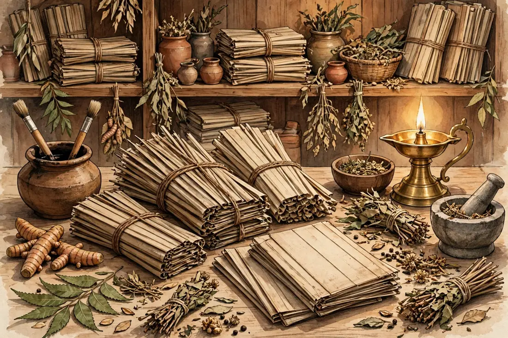
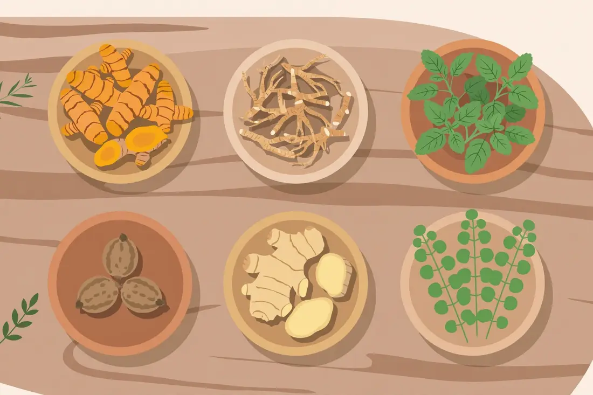
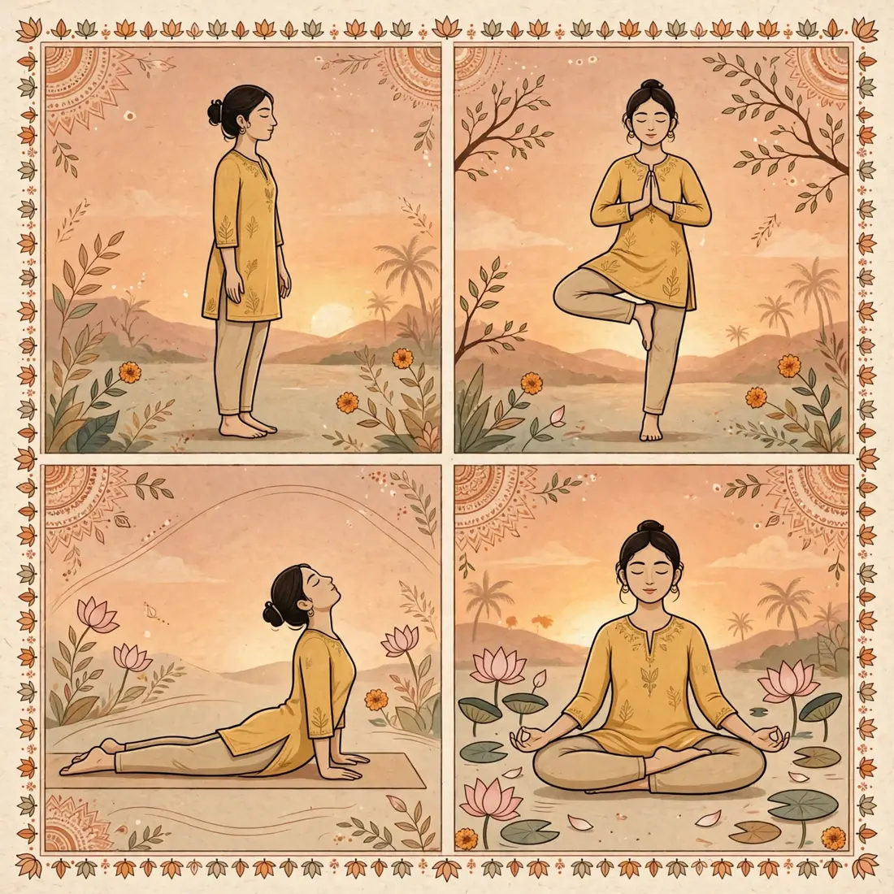

ॐ
EN
हिंदी
मराठी
Vata · Movement
Pitta · Heat
Kapha · Stability
Ojas · Vitality

Shastra · Dinacharya
WHO · Prevention
Top 10 · WHO 2023
Grantha
Dravyaguna · Nighantu

Hatha · Pranayama

Chikitsa
AyurYog
Suraksha
AyurYog Mitra
AyurYog Mitra
×